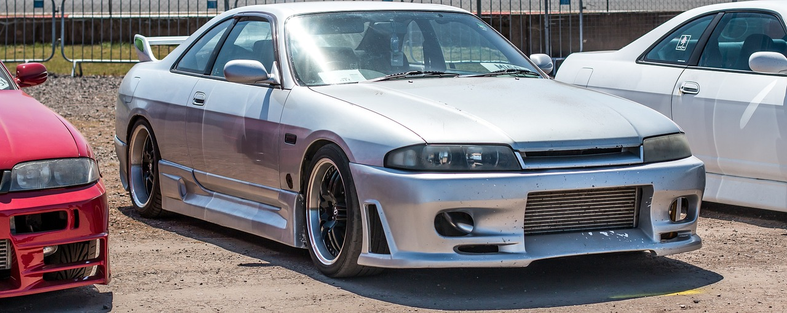
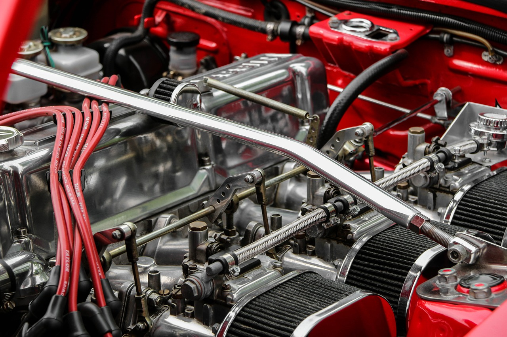

A Nissan Motor Company, közismert nevén Nissan, egy japán multinacionális autógyártó vállalat, amelynek
székhelye Jokohamában, Kanagava prefektúrában található. A céget 1933-ban alapították, és azóta a világ
egyik
vezető autógyártójává nőtte ki magát. A Nissan világszerte ismert innovatív technológiai fejlesztéseiről,
megbízható járműveiről és környezetbarát megoldásairól.

A Nissan Motor Company különféle motorok széles skáláját gyártja, amelyek híresek megbízhatóságukról,
hatékonyságukról és innovációjukról. A Nissan motorjai különféle típusú járművekbe kerülnek, beleértve a
személygépkocsikat, teherautókat, SUV-kat és elektromos járműveket is. Az alábbiakban bemutatjuk a Nissan
motorok legfontosabb jellemzőit és típusait.
Benzinmotorok
A Nissan benzinmotorjai különböző méretűek és teljesítményűek, hogy megfeleljenek a különböző járművek
igényeinek. Néhány példa a népszerű Nissan benzinmotorokra:
QR25DE: Ez egy 2,5 literes négyhengeres motor, amelyet többek között az Altima és a Rogue modellekben
használnak. Ez a motor kiváló egyensúlyt kínál a teljesítmény és az üzemanyag-hatékonyság között.
VQ35DE: Egy 3,5 literes V6-os motor, amelyet a Nissan több sportos modelljébe, mint például a 350Z és a Maxima,
építenek be. Ez a motor híres sima működéséről és erőteljes teljesítményéről.
Dízelmotorok
A dízelmotorok különösen népszerűek a teherautók és nagyobb járművek esetében, mivel nagyobb nyomatékot és
hatékonyságot kínálnak. A Nissan dízelmotorjai között a következők találhatók:
YD25DDTi: Ez egy 2,5 literes négyhengeres turbódízel motor, amelyet többek között a Nissan Navara és a NP300
modellekben használnak. Ez a motor erős teljesítményt és kiváló üzemanyag-hatékonyságot biztosít.
Elektromos Motorok
A Nissan az elektromos motorok fejlesztésében is élen jár, különösen a Nissan LEAF révén, amely az egyik
legnépszerűbb teljesen elektromos autó a világon. Az elektromos motorok csendes működést és azonnali nyomatékot
kínálnak.
EM57: Ez az elektromos motor található a Nissan LEAF-ben, és kiváló gyorsulást és hatótávot biztosít. A Nissan
folyamatosan fejleszti elektromos hajtásláncát, hogy növelje a hatékonyságot és a teljesítményt.
Innovációk és Technológia
A Nissan motorjai számos fejlett technológiát tartalmaznak, amelyek növelik a hatékonyságot, a teljesítményt és
a környezetbarátságot. Ilyen technológiák közé tartozik:
Variable Compression Ratio (VC-Turbo): Ez a forradalmi technológia lehetővé teszi a motor számára, hogy
változtassa a kompressziós arányt a vezetési körülményeknek megfelelően, ezáltal optimalizálva a teljesítményt
és az üzemanyag-hatékonyságot.
Direct Injection: A közvetlen üzemanyag-befecskendezés javítja az égési folyamatot, növeli a teljesítményt és
csökkenti az üzemanyag-fogyasztást.
Jövőbeli Fejlesztések
A Nissan folyamatosan dolgozik új motorok és hajtásláncok fejlesztésén, amelyek még hatékonyabbak, erősebbek és
környezetbarátabbak. A vállalat célja, hogy vezető szerepet töltsön be a hibrid és elektromos hajtásláncok
piacán, miközben továbbra is fejleszti hagyományos belső égésű motorjait.
A Nissan motorjai továbbra is a vállalat elkötelezettségét tükrözik az innováció, a megbízhatóság és a
fenntarthatóság iránt, biztosítva, hogy a Nissan járművek minden igényt kielégítsenek, legyen szó
teljesítményről, hatékonyságról vagy környezetbarát megoldásokról.